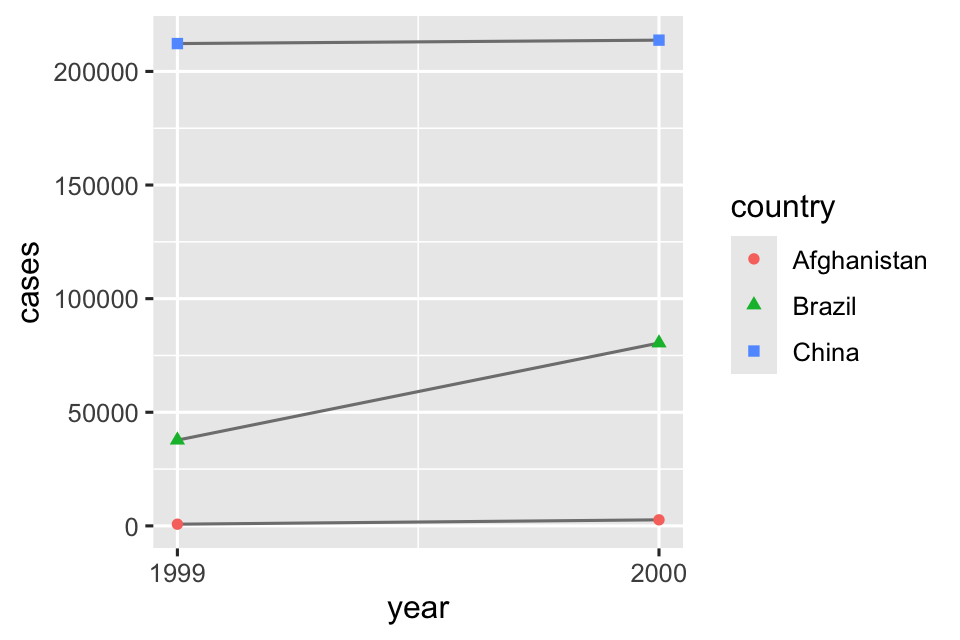
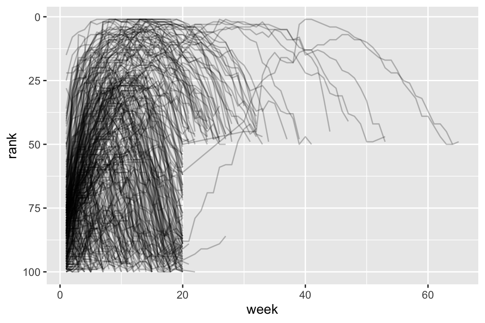

library(tidyverse)
table1
#> # A tibble: 6 × 4
#> country year cases population
#> <chr> <dbl> <dbl> <dbl>
#> 1 Afghanistan 1999 745 19987071
#> 2 Afghanistan 2000 2666 20595360
#> 3 Brazil 1999 37737 172006362
#> 4 Brazil 2000 80488 174504898
#> 5 China 1999 212258 1272915272
#> 6 China 2000 213766 1280428583
table2
#> # A tibble: 12 × 4
#> country year type count
#> <chr> <dbl> <chr> <dbl>
#> 1 Afghanistan 1999 cases 745
#> 2 Afghanistan 1999 population 19987071
#> 3 Afghanistan 2000 cases 2666
#> 4 Afghanistan 2000 population 20595360
#> 5 Brazil 1999 cases 37737
#> 6 Brazil 1999 population 172006362
#> # ℹ 6 more rows
table3
#> # A tibble: 6 × 3
#> country year rate
#> <chr> <dbl> <chr>
#> 1 Afghanistan 1999 745/19987071
#> 2 Afghanistan 2000 2666/20595360
#> 3 Brazil 1999 37737/172006362
#> 4 Brazil 2000 80488/174504898
#> 5 China 1999 212258/1272915272
#> 6 China 2000 213766/1280428583훑어보기: 데이터 정리
“정돈된 데이터셋은 모두 엇비슷하지만 지저분한 데이터셋은 제각기 나름대로의 이유로 지저분하다.”- 해들리 위컴 (Hadley Wickham)
Tidy Data라는 개념을 중심으로 R에서 데이터를 구성하는 일관된 방법을 배울 것입니다. 데이터를 이 형식으로 만들려면 초반에 약간의 노력이 필요하지만 장기적으로는 그만한 보상을 얻습니다. 타이디 데이터와 tidyverse 패키지가 제공하는 정돈된 도구(tidy tools)를 갖추면 데이터를 한 형태에서 다른 형태로 바꾸는 데(munging) 드는 시간이 크게 줄어듭니다. 그만큼 관심 있는 데이터 질문에 더 많은 시간을 할애하게 됩니다.
1 타이디 데이터
동일한 기본 데이터도 여러 가지 방법으로 나타낼 수 있습니다.
아래 예시에서는 동일한 데이터를 세 가지 방식으로 구성했습니다. 각 데이터셋에는 국가(country), 연도(year), 인구(population), 문서화된 결핵(TB) 발병 건수(cases) 등 4개 변수의 값이 같습니다. 다만 값을 구성한 방식이 서로 다릅니다.
이들은 모두 동일한 기본 데이터를 표현하지만 사용하기가 똑같이 쉽지는 않습니다. 그중 table1은 타이디해서 tidyverse에서 작업하기가 훨씬 쉽습니다.
데이터셋을 타이디하게 만드는 서로 연관된 세 가지 규칙이 있습니다.
- 각 변수는 열(column)이어야 합니다. 각 열은 하나의 변수입니다.
- 각 관측치는 행(row)이어야 합니다. 각 행은 하나의 관측치입니다.
- 각 값은 셀(cell)이어야 합니다. 각 셀은 단일 값입니다.
데이터가 타이디한지 확인해야 하는 이유는 무엇일까요? 주로 두 가지 장점이 있습니다.
데이터 저장 방식을 하나로 통일하면 일반적인 이점이 있습니다. 데이터 구조가 일관되면 획일성(uniformity)이 생기므로 그 구조에 맞는 도구를 배우기 쉽습니다.
변수를 열에 배치하면 R의 벡터화(vectorized) 특성이 빛을 발한다는 구체적인 장점이 있습니다. 대부분의 내장 R 함수는 값의 벡터(vectors of values)와 함께 작동하므로 타이디 데이터는 변환하기가 특히 자연스럽습니다.
dplyr, ggplot2를 비롯한 tidyverse의 모든 패키지는 타이디 데이터로 작업하도록 설계되었습니다. 다음은 table1을 다루는 몇 가지 간단한 예시입니다.
# 10,000명당 발병률(rate) 계산
table1 |>
mutate(rate = cases / population * 10000)
#> # A tibble: 6 × 5
#> country year cases population rate
#> <chr> <dbl> <dbl> <dbl> <dbl>
#> 1 Afghanistan 1999 745 19987071 0.373
#> 2 Afghanistan 2000 2666 20595360 1.29
#> 3 Brazil 1999 37737 172006362 2.19
#> 4 Brazil 2000 80488 174504898 4.61
#> 5 China 1999 212258 1272915272 1.67
#> 6 China 2000 213766 1280428583 1.67
# 연도별 총 발병 건수 계산
table1 |>
group_by(year) |>
summarize(total_cases = sum(cases))
#> # A tibble: 2 × 2
#> year total_cases
#> <dbl> <dbl>
#> 1 1999 250740
#> 2 2000 296920
# 시간 경과에 따른 변화 시각화
ggplot(table1, aes(x = year, y = cases)) +
geom_line(aes(group = country), color = "grey50") +
geom_point(aes(color = country, shape = country)) +
scale_x_continuous(breaks = c(1999, 2000)) # x축 눈금을 1999년과 2000년으로 나눔
1.1 연습문제
각 샘플 테이블에 대해 각 관측치와 각 열이 무엇을 나타내는지 설명하세요.
table2와table3의 비율(rate)을 계산하는 과정을 스케치해 보세요. 네 가지 연산을 수행해야 합니다.
- 국가별, 연도별 결핵 발생 건수를 추출합니다.
- 국가별, 연도별 해당하는 인구를 추출합니다.
- 발생 건수를 인구로 나누고 10000을 곱합니다.
- 적절한 위치에 다시 저장합니다.
아직 이 연산을 실제로 수행하는 데 필요한 함수를 모두 배우지는 않았지만 필요한 변환 과정을 논리적으로 생각할 수는 있어야 합니다.
2 데이터 길게 만들기
타이디 데이터의 원칙이 너무 당연해 보여서 타이디하지 않은 데이터셋을 만날 일이 있을까 궁금할 수도 있습니다. 하지만 불행히도 대부분의 실제 데이터는 정돈되어 있지 않습니다. 여기에는 두 가지 주요 이유가 있습니다.
- 데이터는 분석 외의 다른 작업을 쉽게 하도록 구성되는 경우가 많습니다. 예를 들어 분석보다 데이터 입력에 편리한 구조를 흔히 사용합니다.
- 대부분의 사람은 타이디 데이터의 원리에 익숙하지 않습니다. 데이터 작업을 많이 해보지 않으면 이 원리를 스스로 이끌어내기도 어렵습니다.
따라서 대부분의 실제 분석에는 적어도 약간의 정돈 과정이 필요합니다. 먼저 기저에 있는 변수와 관측치가 무엇인지 파악합니다. 쉬울 때도 있지만 원본 데이터를 생성한 사람들과 상의해야 하는 경우도 있습니다. 그런 다음 데이터를 피벗(pivot)하여 변수는 열에, 관측치는 행에 있는 타이디한 형태로 변환합니다.
tidyr은 데이터를 피벗하는 두 함수, pivot_longer()와 pivot_wider()를 제공합니다. 더 흔히 쓰이는 pivot_longer()부터 시작해 몇 가지 예제를 살펴봅시다.
2.1 열 이름에 있는 데이터
billboard 데이터셋은 2000년 노래들의 빌보드 순위를 기록합니다.
billboard
#> # A tibble: 317 × 79
#> artist track date.entered wk1 wk2 wk3 wk4 wk5
#> <chr> <chr> <date> <dbl> <dbl> <dbl> <dbl> <dbl>
#> 1 2 Pac Baby Don't Cry (Ke… 2000-02-26 87 82 72 77 87
#> 2 2Ge+her The Hardest Part O… 2000-09-02 91 87 92 NA NA
#> 3 3 Doors Down Kryptonite 2000-04-08 81 70 68 67 66
#> 4 3 Doors Down Loser 2000-10-21 76 76 72 69 67
#> 5 504 Boyz Wobble Wobble 2000-04-15 57 34 25 17 17
#> 6 98^0 Give Me Just One N… 2000-08-19 51 39 34 26 26
#> # ℹ 311 more rows
#> # ℹ 71 more variables: wk6 <dbl>, wk7 <dbl>, wk8 <dbl>, wk9 <dbl>, …이 데이터셋에서 각 관측치는 노래입니다. 처음 세 열(artist, track, date.entered)은 노래를 설명하는 변수입니다. 그리고 각 주차별 노래의 순위를 설명하는 76개의 열(wk1-wk76)이 있습니다. 열 이름이 하나의 변수(week)이고, 셀 값이 다른 변수(rank)입니다. 그리고 어떤 노래가 2000년에 어느 한순간이라도 상위 100위 안에 들었다면 포함되며 등장 후 최대 72주 동안 추적됩니다.
이 데이터는 pivot_longer()로 정돈합니다.
billboard |>
pivot_longer(
cols = starts_with("wk"),
names_to = "week",
values_to = "rank"
)
#> # A tibble: 24,092 × 5
#> artist track date.entered week rank
#> <chr> <chr> <date> <chr> <dbl>
#> 1 2 Pac Baby Don't Cry (Keep... 2000-02-26 wk1 87
#> 2 2 Pac Baby Don't Cry (Keep... 2000-02-26 wk2 82
#> 3 2 Pac Baby Don't Cry (Keep... 2000-02-26 wk3 72
#> 4 2 Pac Baby Don't Cry (Keep... 2000-02-26 wk4 77
#> 5 2 Pac Baby Don't Cry (Keep... 2000-02-26 wk5 87
#> 6 2 Pac Baby Don't Cry (Keep... 2000-02-26 wk6 94
#> 7 2 Pac Baby Don't Cry (Keep... 2000-02-26 wk7 99
#> 8 2 Pac Baby Don't Cry (Keep... 2000-02-26 wk8 NA
#> 9 2 Pac Baby Don't Cry (Keep... 2000-02-26 wk9 NA
#> 10 2 Pac Baby Don't Cry (Keep... 2000-02-26 wk10 NA
#> # ℹ 24,082 more rowspivot_longer()에는 데이터 뒤에 세 가지 핵심 인수가 있습니다.
cols는 피벗할 열, 즉 변수가 아닌 열을 지정합니다. 이 인수는select()와 동일한 구문을 사용합니다. 여기서는!c(artist, track, date.entered)또는starts_with("wk")를 선택합니다.names_to는 열 이름에 저장된 변수의 이름을 지정하며 이 변수의 이름을week로 지정했습니다.values_to는 셀 값에 저장된 변수의 이름을 지정하며 우리는 이 변수의 이름을rank로 지정했습니다.
코드에서 "week"와 "rank"는 인용 부호 안에 있는데 그 이유는 이들이 우리가 생성하는 새로운 변수이고 pivot_longer() 호출을 실행할 때 데이터에 아직 존재하지 않기 때문입니다.
이제 결과로 나온 더 길어진(longer) 데이터 프레임을 살펴보겠습니다. 노래가 76주 미만 동안 상위 100위 안에 있으면 어떻게 될까요? 2 Pac의 “Baby Don’t Cry”를 예로 들어보겠습니다. 위 출력을 보면 이 노래는 7주 동안만 상위 100위 안에 있었고 나머지 모든 주는 결측값으로 채워져 있습니다. 이러한 NA는 알 수 없는 관측치를 나타내지 않습니다. 데이터셋의 구조 때문에 생겼으므로 values_drop_na = TRUE를 설정해 pivot_longer()가 이를 제거하도록 지정합니다.
billboard |>
pivot_longer(
cols = starts_with("wk"),
names_to = "week",
values_to = "rank",
values_drop_na = TRUE
)
#> # A tibble: 5,307 × 5
#> artist track date.entered week rank
#> <chr> <chr> <date> <chr> <dbl>
#> 1 2 Pac Baby Don't Cry (Keep... 2000-02-26 wk1 87
#> 2 2 Pac Baby Don't Cry (Keep... 2000-02-26 wk2 82
#> 3 2 Pac Baby Don't Cry (Keep... 2000-02-26 wk3 72
#> 4 2 Pac Baby Don't Cry (Keep... 2000-02-26 wk4 77
#> 5 2 Pac Baby Don't Cry (Keep... 2000-02-26 wk5 87
#> 6 2 Pac Baby Don't Cry (Keep... 2000-02-26 wk6 94
#> # ℹ 5,301 more rows이제 행 수가 훨씬 적어졌습니다. NA가 포함된 많은 행이 삭제되었기 때문입니다. 어떤 노래가 76주를 초과하여 상위 100위 안에 든다면 어떻게 될까요? 이 데이터만으로는 알 수 없지만 wk77, wk78 등의 열이 데이터셋에 추가되었을 것이라 추측할 수 있습니다.
이 데이터는 정돈되었지만 mutate()와 readr::parse_number()로 week의 값을 문자열에서 숫자로 바꾸면 이후 계산이 조금 더 쉬워집니다. parse_number()는 다른 모든 텍스트를 무시하고 문자열에서 첫 번째 숫자를 추출하는 유용한 함수입니다.
billboard_longer <- billboard |>
pivot_longer(
cols = starts_with("wk"),
names_to = "week",
values_to = "rank",
values_drop_na = TRUE
) |>
mutate(
week = parse_number(week)
)
billboard_longer
#> # A tibble: 5,307 × 5
#> artist track date.entered week rank
#> <chr> <chr> <date> <dbl> <dbl>
#> 1 2 Pac Baby Don't Cry (Keep... 2000-02-26 1 87
#> 2 2 Pac Baby Don't Cry (Keep... 2000-02-26 2 82
#> 3 2 Pac Baby Don't Cry (Keep... 2000-02-26 3 72
#> 4 2 Pac Baby Don't Cry (Keep... 2000-02-26 4 77
#> 5 2 Pac Baby Don't Cry (Keep... 2000-02-26 5 87
#> 6 2 Pac Baby Don't Cry (Keep... 2000-02-26 6 94
#> # ℹ 5,301 more rows이제 주차 숫자(week numbers)와 순위(rank) 값이 서로 다른 변수에 있으므로 시간에 따른 노래 순위의 변화를 시각화하기 좋습니다. 20주를 초과해 상위 100위 안에 머무는 노래는 거의 없습니다.
billboard_longer |>
ggplot(aes(x = week, y = rank, group = track)) +
geom_line(alpha = 0.25) +
scale_y_reverse()
2.2 피벗은 어떻게 작동하나요?
피벗팅으로 데이터의 형태를 바꾸는 법을 살펴봤으니 이제 피벗팅이 데이터에 어떤 작업을 하는지 직관적으로 이해해 봅시다. 무슨 일이 일어나는지 쉽게 볼 수 있도록 매우 간단한 데이터셋으로 시작하겠습니다. id가 A, B, C인 3명의 환자가 있고 각 환자의 혈압을 두 번 측정한다고 가정해 봅시다.
소규모 티블을 손으로 구성할 때 유용한 tribble() 함수로 데이터를 생성하겠습니다.
df <- tribble(
~id, ~bp1, ~bp2,
"A", 100, 120,
"B", 140, 115,
"C", 120, 125
)새 데이터셋에는 id(이미 존재함), measurement(열 이름), value(셀 값)라는 세 가지 변수가 필요합니다. 그러려면 df를 더 길게 피벗해야(pivot longer) 합니다.
df |>
pivot_longer(
cols = bp1:bp2,
names_to = "measurement",
values_to = "value"
)
#> # A tibble: 6 × 3
#> id measurement value
#> <chr> <chr> <dbl>
#> 1 A bp1 100
#> 2 A bp2 120
#> 3 B bp1 140
#> 4 B bp2 115
#> 5 C bp1 120
#> 6 C bp2 125형태 변경(reshaping)은 어떻게 작동할까요? 열 단위로 생각하면 이해하기 쉽습니다. 원본 데이터셋에서 이미 변수였던 열(id)의 값은 피벗하는 각 열마다 한 번씩 반복됩니다. 열 이름은 names_to로 정의한 새 변수의 값이 되며 원본 데이터셋의 각 행마다 한 번씩 반복됩니다. 셀 값도 values_to로 정의한 새 변수의 값이 되며 행별로 풀립니다(unwound).
2.3 열 이름에 여러 변수가 있는 경우
여러 정보가 열 이름에 쑤셔 넣어져(crammed) 있고 이를 각각 새 변수에 저장해야 한다면 더 까다롭습니다. 예로 위에서 본 table1과 관련 테이블들의 출처인 who2 데이터셋을 살펴보겠습니다.
who2
#> # A tibble: 7,240 × 58
#> country year sp_m_014 sp_m_1524 sp_m_2534 sp_m_3544 sp_m_4554
#> <chr> <dbl> <dbl> <dbl> <dbl> <dbl> <dbl>
#> 1 Afghanistan 1980 NA NA NA NA NA
#> 2 Afghanistan 1981 NA NA NA NA NA
#> 3 Afghanistan 1982 NA NA NA NA NA
#> 4 Afghanistan 1983 NA NA NA NA NA
#> 5 Afghanistan 1984 NA NA NA NA NA
#> 6 Afghanistan 1985 NA NA NA NA NA
#> # ℹ 7,234 more rows
#> # ℹ 51 more variables: sp_m_5564 <dbl>, sp_m_65 <dbl>, sp_f_014 <dbl>, …세계보건기구(World Health Organisation)에서 수집한 이 데이터셋에는 결핵 진단 정보가 기록되어 있습니다. 이미 변수로 구성되어 해석하기 쉬운 열은 country와 year, 두 개입니다. 그 뒤에 sp_m_014, ep_m_4554, rel_m_3544와 같은 56개의 열이 옵니다. 이 열들을 오래 들여다보면 일정한 패턴을 찾을 수 있습니다.
각 열의 이름은 _로 구분된 세 부분으로 구성됩니다. 첫 번째 부분인 sp/rel/ep는 진단에 사용된 방법(method)을 설명하고 두 번째 부분인 m/f는 gender(이 데이터셋에서는 이진 변수로 코딩됨)이며 세 번째 부분인 014/1524/2534/3544/4554/5564/65는 연령(age) 범위 카테고리입니다(014는 0-14를 나타냄).
who2에는 6가지 정보가 기록되어 있습니다. 국가와 연도(이미 열임), 진단 방법, 성별 범주, 연령 범위 범주(다른 열 이름에 포함됨), 해당 범주의 환자 수(셀 값)입니다. 이 6가지 정보를 각각 열로 구성하려면 pivot_longer()에 세 가지를 지정합니다. names_to에는 열 이름 벡터를, names_sep에는 원래 변수 이름을 여러 부분으로 나누는 인스트럭터(instructors)를, values_to에는 열 이름을 지정합니다.
who2 |>
pivot_longer(
cols = !(country:year),
names_to = c("diagnosis", "gender", "age"),
names_sep = "_",
values_to = "count"
)
#> # A tibble: 405,440 × 6
#> country year diagnosis gender age count
#> <chr> <dbl> <chr> <chr> <chr> <dbl>
#> 1 Afghanistan 1980 sp m 014 NA
#> 2 Afghanistan 1980 sp m 1524 NA
#> 3 Afghanistan 1980 sp m 2534 NA
#> 4 Afghanistan 1980 sp m 3544 NA
#> 5 Afghanistan 1980 sp m 4554 NA
#> 6 Afghanistan 1980 sp m 5564 NA
#> # ℹ 405,434 more rowsnames_sep 대신 names_pattern을 쓸 수도 있습니다. 정규 표현식을 배우고 나면 더 복잡한 명명 방식에서 변수를 추출할 때 사용할 수 있습니다. 개념적으로는 앞서 본 단순한 사례를 조금 변형한 것뿐입니다. 이제 열 이름이 하나의 열이 아니라 여러 열로 피벗됩니다. 먼저 피벗하고 나서 분리하는 두 단계처럼 볼 수도 있지만 내부에서는 더 빠른 단일 단계로 처리됩니다.
2.4 열 헤더에 데이터와 변수 이름이 섞인 경우
그다음으로 복잡한 경우는 열 이름에 변수 값과 변수 이름이 섞여 있을 때입니다. household 데이터셋을 예로 살펴보겠습니다.
household
#> # A tibble: 5 × 5
#> family dob_child1 dob_child2 name_child1 name_child2
#> <int> <date> <date> <chr> <chr>
#> 1 1 1998-11-26 2000-01-29 Susan Jose
#> 2 2 1996-06-22 NA Mark <NA>
#> 3 3 2002-07-11 2004-04-05 Sam Seth
#> 4 4 2004-10-10 2009-08-27 Craig Khai
#> 5 5 2000-12-05 2005-02-28 Parker Gracie이 데이터셋에는 5개 가족의 데이터가 들어 있으며 가족마다 최대 두 자녀의 이름과 생년월일이 포함됩니다. 이 데이터셋의 새로운 과제는 열 이름에 두 변수(dob, name)의 이름과 다른 변수(child, 값은 1 또는 2)의 값이 함께 들어 있다는 점입니다. 이 문제를 해결하려면 names_to에 다시 벡터를 제공하되 이번에는 특수 보초(sentinel) ".value"를 사용합니다. ".value"는 변수 이름이 아니라 pivot_longer()에 다른 작업을 지시하는 고유한 값입니다. 일반적인 values_to 인수를 재정의(overrides)하여 피벗된 열 이름의 첫 번째 구성 요소를 출력의 변수 이름으로 사용합니다.
household |>
pivot_longer(
cols = !family,
names_to = c(".value", "child"),
names_sep = "_",
values_drop_na = TRUE
)
#> # A tibble: 9 × 4
#> family child dob name
#> <int> <chr> <date> <chr>
#> 1 1 child1 1998-11-26 Susan
#> 2 1 child2 2000-01-29 Jose
#> 3 2 child1 1996-06-22 Mark
#> 4 3 child1 2002-07-11 Sam
#> 5 3 child2 2004-04-05 Seth
#> 6 4 child1 2004-10-10 Craig
#> # ℹ 3 more rows입력 형태 때문에 명시적인 누락 변수(자녀가 한 명뿐인 가족)가 생기므로 이번에도 values_drop_na = TRUE를 사용합니다. names_to에서 ".value"를 사용하면 입력의 열 이름이 출력의 값과 변수 이름에 모두 기여합니다.
3 데이터 넓게 만들기
지금까지는 값이 열 이름에 들어 있는 일반적인 문제를 pivot_longer()로 해결했습니다. 다음으로 (하하) pivot_wider()로 넘어가겠습니다. 이 함수는 열을 늘리고 행을 줄여 데이터셋을 더 넓게(wider) 만들며 하나의 관측치가 여러 행에 분산되어 있을 때 유용합니다. 실제로는 덜 흔한 듯하지만 정부 데이터에서는 자주 나타납니다.
먼저 환자 경험 데이터를 수집하는 Centers of Medicare and Medicaid services의 cms_patient_experience 데이터셋을 살펴보겠습니다.
cms_patient_experience
#> # A tibble: 500 × 5
#> org_pac_id org_nm measure_cd measure_title prf_rate
#> <chr> <chr> <chr> <chr> <dbl>
#> 1 0446157747 USC CARE MEDICAL GROUP INC CAHPS_GRP_1 CAHPS for MIPS… 63
#> 2 0446157747 USC CARE MEDICAL GROUP INC CAHPS_GRP_2 CAHPS for MIPS… 87
#> 3 0446157747 USC CARE MEDICAL GROUP INC CAHPS_GRP_3 CAHPS for MIPS… 86
#> 4 0446157747 USC CARE MEDICAL GROUP INC CAHPS_GRP_5 CAHPS for MIPS… 57
#> 5 0446157747 USC CARE MEDICAL GROUP INC CAHPS_GRP_8 CAHPS for MIPS… 85
#> 6 0446157747 USC CARE MEDICAL GROUP INC CAHPS_GRP_12 CAHPS for MIPS… 24
#> # ℹ 494 more rows연구 대상의 핵심 단위는 기관(organization)이지만 각 기관의 데이터가 6개 행에 분산되어 있습니다. 설문 조사 기관이 수행한 측정마다 한 행씩 배정됩니다. distinct()를 사용하면 measure_cd와 measure_title의 전체 값 세트를 확인할 수 있습니다.
cms_patient_experience |>
distinct(measure_cd, measure_title)
#> # A tibble: 6 × 2
#> measure_cd measure_title
#> <chr> <chr>
#> 1 CAHPS_GRP_1 CAHPS for MIPS SSM: Getting Timely Care, Appointments, and In…
#> 2 CAHPS_GRP_2 CAHPS for MIPS SSM: How Well Providers Communicate
#> 3 CAHPS_GRP_3 CAHPS for MIPS SSM: Patient's Rating of Provider
#> 4 CAHPS_GRP_5 CAHPS for MIPS SSM: Health Promotion and Education
#> 5 CAHPS_GRP_8 CAHPS for MIPS SSM: Courteous and Helpful Office Staff
#> 6 CAHPS_GRP_12 CAHPS for MIPS SSM: Stewardship of Patient Resources두 열 모두 변수 이름으로는 그다지 좋지 않습니다. measure_cd는 변수의 의미를 드러내지 않고 measure_title은 공백이 포함된 긴 문장입니다. 지금은 measure_cd를 새 열 이름의 소스로 사용하겠습니다. 실제 분석에서는 짧고 의미 있는 변수 이름을 직접 만드는 편이 나을 수도 있습니다.
pivot_wider()의 인터페이스는 pivot_longer()와 반대입니다. 새 열 이름을 선택하는 대신 값(values_from)과 열 이름(names_from)을 정의할 기존 열을 지정해야 합니다.
cms_patient_experience |>
pivot_wider(
names_from = measure_cd,
values_from = prf_rate
)
#> # A tibble: 500 × 9
#> org_pac_id org_nm measure_title CAHPS_GRP_1 CAHPS_GRP_2
#> <chr> <chr> <chr> <dbl> <dbl>
#> 1 0446157747 USC CARE MEDICAL GROUP … CAHPS for MIPS… 63 NA
#> 2 0446157747 USC CARE MEDICAL GROUP … CAHPS for MIPS… NA 87
#> 3 0446157747 USC CARE MEDICAL GROUP … CAHPS for MIPS… NA NA
#> 4 0446157747 USC CARE MEDICAL GROUP … CAHPS for MIPS… NA NA
#> 5 0446157747 USC CARE MEDICAL GROUP … CAHPS for MIPS… NA NA
#> 6 0446157747 USC CARE MEDICAL GROUP … CAHPS for MIPS… NA NA
#> # ℹ 494 more rows
#> # ℹ 4 more variables: CAHPS_GRP_3 <dbl>, CAHPS_GRP_5 <dbl>, …출력이 완전히 올바르지는 않습니다. 각 기관에 여전히 여러 행이 있습니다. 각 행을 고유하게 식별하는 값이 어느 열(또는 열들)에 있는지 pivot_wider()에 알려주어야 하기 때문입니다. 이 경우에는 "org"로 시작하는 변수들입니다.
cms_patient_experience |>
pivot_wider(
id_cols = starts_with("org"),
names_from = measure_cd,
values_from = prf_rate
)
#> # A tibble: 95 × 8
#> org_pac_id org_nm CAHPS_GRP_1 CAHPS_GRP_2 CAHPS_GRP_3 CAHPS_GRP_5
#> <chr> <chr> <dbl> <dbl> <dbl> <dbl>
#> 1 0446157747 USC CARE MEDICA… 63 87 86 57
#> 2 0446162697 ASSOCIATION OF … 59 85 83 63
#> 3 0547164295 BEAVER MEDICAL … 49 NA 75 44
#> 4 0749333730 CAPE PHYSICIANS… 67 84 85 65
#> 5 0840104360 ALLIANCE PHYSIC… 66 87 87 64
#> 6 0840109864 REX HOSPITAL INC 73 87 84 67
#> # ℹ 89 more rows
#> # ℹ 2 more variables: CAHPS_GRP_8 <dbl>, CAHPS_GRP_12 <dbl>이렇게 하면 원하는 출력을 얻습니다.
3.1 pivot_wider()는 어떻게 작동하나요?
pivot_wider()의 작동 방식을 이해하려고 이번에도 매우 간단한 데이터셋으로 시작하겠습니다. 이번에는 id가 A와 B인 2명의 환자가 있습니다. 환자 A는 혈압을 3번, 환자 B는 2번 측정했습니다.
df <- tribble(
~id, ~measurement, ~value,
"A", "bp1", 100,
"B", "bp1", 140,
"B", "bp2", 115,
"A", "bp2", 120,
"A", "bp3", 105
)value 열에서는 값을, measurement 열에서는 이름을 가져옵니다.
df |>
pivot_wider(
names_from = measurement,
values_from = value
)
#> # A tibble: 2 × 4
#> id bp1 bp2 bp3
#> <chr> <dbl> <dbl> <dbl>
#> 1 A 100 120 105
#> 2 B 140 115 NApivot_wider()는 먼저 행과 열에 들어갈 내용을 파악합니다. 새로운 열 이름은 measurement의 고유한 값들입니다.
df |>
distinct(measurement) |>
pull()
#> [1] "bp1" "bp2" "bp3"기본적으로 새 이름이나 값으로 들어가지 않는 모든 변수가 출력의 행을 결정합니다. 이러한 변수를 id_cols라고 합니다. 여기에는 열이 하나뿐이지만 일반적으로 개수에는 제한이 없습니다.
df |>
select(!measurement & !value) |>
distinct()
#> # A tibble: 2 × 1
#> id
#> <chr>
#> 1 A
#> 2 B이어서 pivot_wider()는 이 결과들을 결합해 빈(empty) 데이터 프레임을 생성합니다.
df |>
select(!measurement & !value) |>
distinct() |>
mutate(x = NA, y = NA, z = NA)
#> # A tibble: 2 × 4
#> id x y z
#> <chr> <lgl> <lgl> <lgl>
#> 1 A NA NA NA
#> 2 B NA NA NA그런 다음 입력 데이터로 모든 결측값을 채웁니다. 환자 B는 세 번째 혈압 측정값이 없으므로 출력의 모든 셀에 해당하는 입력값이 있는 것은 아닙니다. 따라서 해당 셀은 누락된 상태로 남습니다.
출력의 한 셀에 해당하는 입력의 행이 여러 개라면 어떻게 되는지 궁금할 수도 있습니다. 아래 예에는 id “A”와 measurement “bp1”에 해당하는 두 개의 행이 있습니다.
df <- tribble(
~id, ~measurement, ~value,
"A", "bp1", 100,
"A", "bp1", 102,
"A", "bp2", 120,
"B", "bp1", 140,
"B", "bp2", 115
)이것을 피벗하려고 시도하면 리스트 열(list-columns)을 포함하는 출력을 얻게 됩니다.
df |>
pivot_wider(
names_from = measurement,
values_from = value
)
#> Warning: Values from `value` are not uniquely identified; output will contain
#> list-cols.
#> • Use `values_fn = list` to suppress this warning.
#> • Use `values_fn = {summary_fun}` to summarise duplicates.
#> • Use the following dplyr code to identify duplicates.
#> {data} |>
#> dplyr::summarise(n = dplyr::n(), .by = c(id, measurement)) |>
#> dplyr::filter(n > 1L)
#> # A tibble: 2 × 3
#> id bp1 bp2
#> <chr> <list> <list>
#> 1 A <dbl [2]> <dbl [1]>
#> 2 B <dbl [1]> <dbl [1]>아직 이런 데이터를 다루는 방법을 모르므로 경고에 나온 힌트를 따라 문제의 위치를 파악하는 편이 좋습니다.
df |>
group_by(id, measurement) |>
summarize(n = n(), .groups = "drop") |>
filter(n > 1)
#> # A tibble: 1 × 3
#> id measurement n
#> <chr> <chr> <int>
#> 1 A bp1 2이제 데이터에서 발생한 문제를 파악해 근본적인 손상을 복구하거나, 행과 열 값의 각 조합에 행이 하나만 남도록 그룹화 및 요약 기술을 적용해야 합니다.